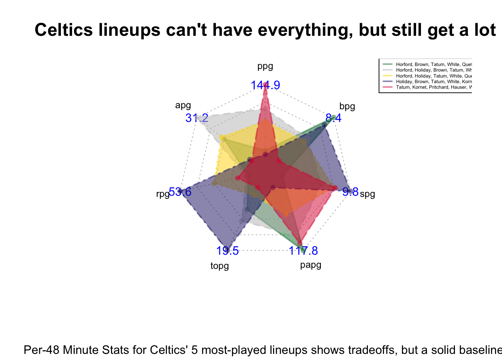

Many Paths to the Same Destination: The Celtics’ Different Lineups This Season
basketball
NBA
Celtics
Author
Sam Benning
Published
November 20, 2024
The Boston Celtics have been one of the best teams in the league this year, notably taking down the previously 15-0 Cavaliers. They are strong favorites to repeat as NBA champions. They haven’t had much turnover of their roster from last year, but there has been some shift in their lineups and minutes. Again, regardless of this shift, they still have had immense success in their first part of the 2024-25 season. So, what are their secrets? Today we will be looking into the Celtics lineups and will try to figure out what their recipe is to try and be back-to-back world champs. Data will be accessed through the hoopR library.
Code
library(tidyverse)
── Attaching core tidyverse packages ──────────────────────── tidyverse 2.0.0 ──
✔ dplyr 1.1.4 ✔ readr 2.1.5
✔ forcats 1.0.0 ✔ stringr 1.5.1
✔ ggplot2 3.5.1 ✔ tibble 3.2.1
✔ lubridate 1.9.3 ✔ tidyr 1.3.1
✔ purrr 1.0.2
── Conflicts ────────────────────────────────────────── tidyverse_conflicts() ──
✖ dplyr::filter() masks stats::filter()
✖ dplyr::lag() masks stats::lag()
ℹ Use the conflicted package (<http://conflicted.r-lib.org/>) to force all conflicts to become errors
Looking at the plus-minus of every lineup that has played >12 minutes (equivalent to 1 quarter) together this season, we can take a look at our best lineups by plus-minus, which is the differential that their team achieved while a group was on the floor.
# A tibble: 15 × 5
GROUP_NAME gp pm min pm48
<chr> <dbl> <dbl> <dbl> <dbl>
1 J. Tatum - D. White - N. Queta - P. Pritchard - S. … 6 17 17.5 46.7
2 J. Tatum - L. Kornet - P. Pritchard - S. Hauser - J… 5 16 25.2 30.5
3 J. Tatum - D. White - L. Kornet - P. Pritchard - S.… 4 9 16.2 26.7
4 A. Horford - J. Holiday - J. Tatum - D. White - N. … 4 20 39.1 24.6
5 J. Holiday - J. Brown - J. Tatum - D. White - N. Qu… 3 8 17.2 22.4
6 A. Horford - J. Holiday - J. Brown - J. Tatum - D. … 8 60 137. 21.0
7 J. Holiday - J. Brown - J. Tatum - D. White - L. Ko… 3 8 19.7 19.5
8 J. Brown - J. Tatum - D. White - N. Queta - P. Prit… 6 7 17.8 18.9
9 A. Horford - J. Holiday - J. Tatum - D. White - L. … 3 6 18.0 16.0
10 J. Holiday - J. Brown - J. Tatum - L. Kornet - P. P… 4 4 12.6 15.2
11 J. Brown - J. Tatum - D. White - L. Kornet - P. Pri… 6 -1 14.4 -3.34
12 A. Horford - J. Brown - J. Tatum - D. White - N. Qu… 2 -4 22.8 -8.42
13 J. Brown - D. White - N. Queta - P. Pritchard - S. … 5 -5 19.6 -12.3
14 J. Holiday - D. White - L. Kornet - P. Pritchard - … 4 -12 18.5 -31.2
15 J. Holiday - J. Tatum - N. Queta - P. Pritchard - S… 5 -14 18.8 -35.7
I created a new statistic that I call plus-minus per 48 minutes, which is essentially the expected differential of a lineup over an opponent if they played an entire game together. While a bit unrealistic, I find it to give us a good idea of how solid a lineup may be, instead of looking at small, wacky numbers.
Our best pm48 lineup is the only lineup that includes Jordan Walsh, interestingly enough. They would be expected to defeat a team by almost 47 points if they played a full game together, which is whopping. They have only played 17 minutes all together, but maybe they should play a little more. Overall, it’s very nice to see that there is a good distribution of lineups that all can get it done, whether we have Tatum in or Brown in (or both).
The Celtics have led the league in 3PM this year. Let’s take a look at who plays the biggest part in making that happen.
# A tibble: 15 × 5
GROUP_NAME min `3pm` `3pa` `3pct`
<chr> <dbl> <dbl> <dbl> <dbl>
1 A. Horford - J. Holiday - J. Brown - J. Tatum - D. … 137. 67 134 50
2 J. Brown - D. White - N. Queta - P. Pritchard - S. … 19.6 6 12 50
3 J. Brown - J. Tatum - D. White - L. Kornet - P. Pri… 14.4 6 12 50
4 J. Tatum - D. White - L. Kornet - P. Pritchard - S.… 16.2 9 18 50
5 J. Tatum - D. White - N. Queta - P. Pritchard - S. … 17.5 7 14 50
6 J. Holiday - J. Brown - J. Tatum - D. White - N. Qu… 17.2 7 16 43.8
7 A. Horford - J. Holiday - J. Tatum - D. White - L. … 18.0 8 21 38.1
8 A. Horford - J. Brown - J. Tatum - D. White - N. Qu… 22.8 9 24 37.5
9 J. Brown - J. Tatum - D. White - N. Queta - P. Prit… 17.8 6 16 37.5
10 J. Tatum - L. Kornet - P. Pritchard - S. Hauser - J… 25.2 13 35 37.1
11 A. Horford - J. Holiday - J. Tatum - D. White - N. … 39.1 16 44 36.4
12 J. Holiday - J. Brown - J. Tatum - D. White - L. Ko… 19.7 6 17 35.3
13 J. Holiday - J. Brown - J. Tatum - L. Kornet - P. P… 12.6 4 15 26.7
14 J. Holiday - J. Tatum - N. Queta - P. Pritchard - S… 18.8 6 23 26.1
15 J. Holiday - D. White - L. Kornet - P. Pritchard - … 18.5 5 20 25
The current NBA league average is 35.7% from three. Of our 14 different lineups that have played >12 minutes (aka 1 quarter), 10 of them shoot above the league average. You could pretty much put any of our “usual” groups in there and be pretty confident that they will be a threat from beyond the arc. This must be frustrating for any team who may be trying to target specific lineups or players - they don’t really get a break from our bombardment of threes.
Defensively, our Celtics are relatively middle-of-the pack. I would love to see which lineups are/aren’t giving up buckets to other teams.
# A tibble: 15 × 4
GROUP_NAME g min papg
<chr> <dbl> <dbl> <dbl>
1 J. Holiday - J. Brown - J. Tatum - D. White - L. Kornet 3 19.7 87.8
2 J. Brown - J. Tatum - D. White - N. Queta - P. Pritchard 6 17.8 94.5
3 A. Horford - J. Holiday - J. Tatum - D. White - L. Kornet 3 18.0 96.1
4 J. Holiday - J. Brown - J. Tatum - L. Kornet - P. Pritchard 4 12.6 99.1
5 A. Horford - J. Holiday - J. Tatum - D. White - N. Queta 4 39.1 101.
6 J. Tatum - D. White - N. Queta - P. Pritchard - S. Hauser 6 17.5 104.
7 A. Horford - J. Holiday - J. Brown - J. Tatum - D. White 8 137. 111.
8 J. Holiday - D. White - L. Kornet - P. Pritchard - S. Haus… 4 18.5 114.
9 J. Tatum - L. Kornet - P. Pritchard - S. Hauser - J. Walsh 5 25.2 114.
10 J. Tatum - D. White - L. Kornet - P. Pritchard - S. Hauser 4 16.2 116.
11 J. Holiday - J. Brown - J. Tatum - D. White - N. Queta 3 17.2 118.
12 A. Horford - J. Brown - J. Tatum - D. White - N. Queta 2 22.8 118.
13 J. Holiday - J. Tatum - N. Queta - P. Pritchard - S. Hauser 5 18.8 120.
14 J. Brown - J. Tatum - D. White - L. Kornet - P. Pritchard 6 14.4 127.
15 J. Brown - D. White - N. Queta - P. Pritchard - S. Hauser 5 19.6 142.
Starters + Kornet seems to be our best.
Now, let’s look at the big picture. I am going to look at our 5 most utilized lineups and see where our strengths and weaknesses lie. A radar chart will help us measure a number of selected stats and compare lineups to each other based upon our selection.
Code
library(fmsb)# Filter and summarize per-48 stats for lineups with MIN > 20.0celtics_radar <- current_celtics |>filter(MIN >19.6) |>group_by(GROUP_NAME) |>summarize(ppg =round((PTS / MIN) *48, 1),apg =round((AST / MIN) *48, 1),rpg =round((REB / MIN) *48, 1),topg =round((TOV / MIN) *48, 1),papg =round(((PLUS_MINUS - PTS)/MIN) *-48, 1),spg =round((STL / MIN) *48, 1),bpg =round((BLK / MIN) *48, 1) ) |>mutate(lineupnames =case_when( GROUP_NAME =="A. Horford - J. Brown - J. Tatum - D. White - N. Queta"~"Horford, Brown, Tatum, White, Queta", GROUP_NAME =="A. Horford - J. Holiday - J. Brown - J. Tatum - D. White"~"Horford, Holiday, Brown, Tatum, White", GROUP_NAME =="A. Horford - J. Holiday - J. Tatum - D. White - N. Queta"~"Horford, Holiday, Tatum, White, Queta", GROUP_NAME =="J. Holiday - J. Brown - J. Tatum - D. White - L. Kornet"~"Holiday, Brown, Tatum, White, Kornet", GROUP_NAME =="J. Tatum - L. Kornet - P. Pritchard - S. Hauser - J. Walsh"~"Tatum, Kornet, Pritchard, Hauser, Walsh",TRUE~ GROUP_NAME # Keep other values unchanged ))# Prepare max and min values for radar chart scalingmax_vals <-apply(celtics_radar[,-c(1, 9)], 2, max) # Exclude GROUP_NAME and lineupnamesmin_vals <-apply(celtics_radar[,-c(1, 9)], 2, min) # Exclude GROUP_NAME and lineupnames# Combine data for radar chartradar_data_scaled <-rbind(max_vals, min_vals, celtics_radar[,-c(1, 9)])# Specify custom fill colorscustom_fill_colors <-c(adjustcolor("#007A33", alpha.f =0.5), # Celtics Greenadjustcolor("grey", alpha.f =0.5), # Silveradjustcolor("#FFD700", alpha.f =0.5), # Goldadjustcolor("#191970", alpha.f =0.5), # Midnight Blueadjustcolor("#DC143C", alpha.f =0.5) # Crimson Red)# Ensure the number of fill colors matches the number of lineupsfill_colors <-rep(custom_fill_colors, length.out =nrow(celtics_radar))# Plot radar chartradarchart( radar_data_scaled,axistype =2,pcol = custom_fill_colors, # Line colors for each lineupplwd =2, # Line widthpfcol = custom_fill_colors, # Fill colors for each lineupcglcol ="grey", # Grid line colorvlcex =0.8# Variable label size)title(main ="Celtics lineups can't have everything, but still get a lot", # Titlesub ="Per-48 Minute Stats for Celtics' 5 most-played lineups shows tradeoffs, but a solid baseline.", # Subtitlecex.main =1.5, # Size of the main titlecex.sub =1# Size of the subtitle)# Add legendlegend(x =1.3, y =1.3, # Adjust position using relative coordinateslegend = celtics_radar$lineupnames, # Use updated lineup namescol = fill_colors, # Match colorslty =1, # Line typelwd =2, # Line widthcex =0.4# Text size)

Looking at these different lineups, we clearly can’t get everything we want in every combination of players. However, certain lineups truly excel at specific things, for example, Holiday-Brown-Tatum-White-Kornet are clearly the best defensive lineup that we have.
I would consider our starting lineup (in gray) to be a solid baseline: solid scoring, low turnovers, solid defense. It struggles with rebounding the ball (which has been the problem for years upon end, don’t even get me started), but makes up with everything else.
What initially may look like our “worst” lineup on paper in yellow, may actually be our best, as it is most consistent. I find that it may even be better than our starting lineup. It has a great distribution of passing, rebounding, and scoring while limiting turnovers and opponent points. Again, it may not excel in anything in particular, but it is important to note that those lineups that have really gone above and beyond are truly insane numbers, so a value that is on the inside on isn’t actually that bad. I didn’t expect Queta for Brown to be a substitution that may enhance our lineup, but maybe this is a better fit given that Tatum and Brown do pretty much the same thing, while Queta brings an interior/defensive presence that no other Celtics big has. Having Payton Pritchard in that red lineup certainly helps with scoring - he has the most confidence in his shooting than anyone else on the team, and I’m sure that rubs off on his teammates while he’s on the floor.
In my opinion, this chart also gives insight about how our other bench pieces fit in with our team, which may reflect their expected roles as well. With our red lineup, I would expect Hauser and Walsh to simply be in the game just to score - who cares about defense or anything else, just get buckets - we see this through their high scoring but not many other good stats. On the other hand, I see Kornet and Queta in to control the interior (as I mentioned with regards to Queta). It’s very interesting how this chart can give more interpretation than just a holistic viewpoint; it can provide us with maybe some deeper stories to uncover with the flow of our repeat champion hopefuls.
This was a tough statistical measure to analyze - it requires some guessing, assumptions, and overall knowledge. I can’t rely as heavily on the numbers as I would for any other analysis. It makes me wonder how much coaching staffs balance the eye test versus these numbers as well when deciding who to play. Might be time for more research.